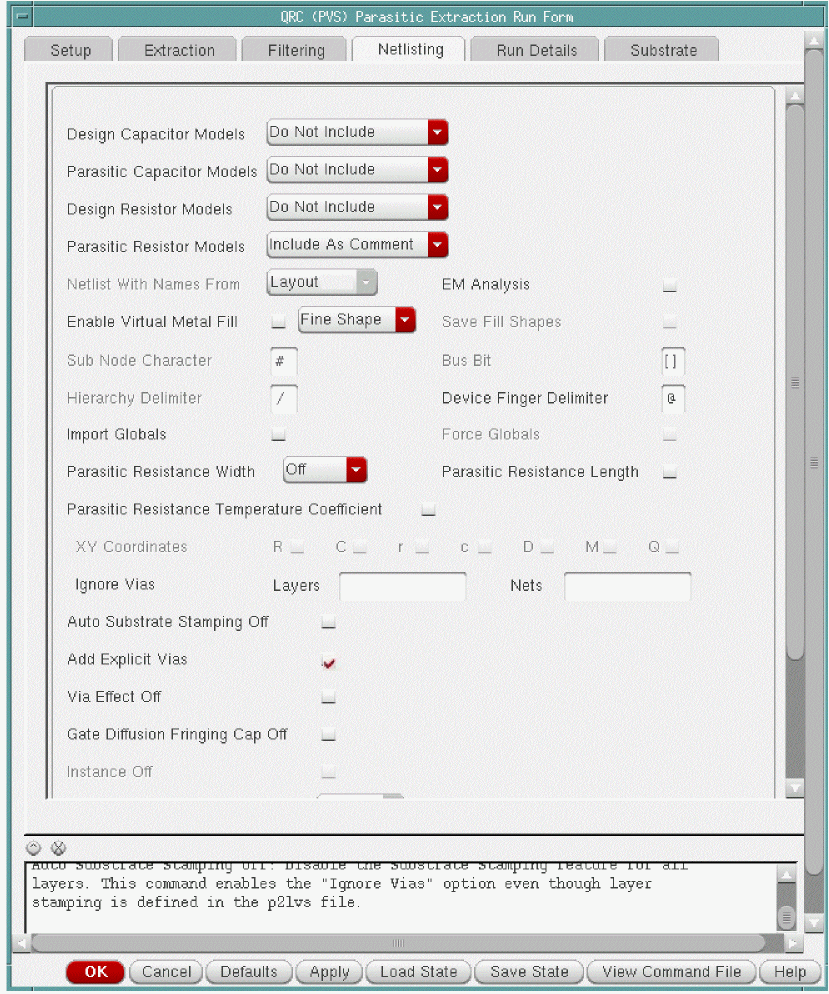

3
IR/EM Analysis Flow
- Overview
- Running Pegasus LVS or PVS LVS
- Running Pegasus or PVS Quantus QRC
- Running Extraction with Quantus (Calibre) Interface
- Running a Spectre Simulation
- Running an APS Simulation
- Running an UltraSim Simulation
Overview
A typical IR/EM analysis flow is as follows:
-
Compare the schematic design with the layout design to verify the logical connectivity of the design.This is done by running Pegasus LVS or PVS LVS (Layout as compared to Schematic) or Calibre® LVS. For more information, see Running Pegasus LVS or PVS LVS.
- Extract parasitic resistance and capacitance from the power and ground nets and create an extracted view of the design using Quantus QRC. For more information, see Running Pegasus or PVS Quantus QRC and Running Extraction with Quantus (Calibre) Interface.
- Simulate the extracted view of the design using Spectre, UltraSim, or APS simulation. For more information, see Running a Spectre Simulation, Running an UltraSim Simulation, and Running an APS Simulation.
- Run Power IR/EM to begin power-grid and electromigration analysis on your design and view the results.
Figure 3-1 Power IR/EM Design Flow
The following sections describe this flow in detail and explain the options to be set for Pegasus/PVS and Spectre for this analysis and the flow for Power IR/EM.
Running Pegasus LVS or PVS LVS
Before extracting the power grid and the signal nets, run Pegasus or PVS LVS on the layout view of the design you want to analyze. You do not need to make any special modifications to the Pegasus or PVS LVS decks.
-
In the Virtuoso Layout Suite, select the Run LVS sub menu from the Pegasus or PVS menu. This is shown below:
Figure 3-2 Run LVS Sub Menu from PVS Menu
Figure 3-3 Run LVS Sub Menu from Pegasus Menu
-
The Pegasus or PVS LVS Run Submission Form opens.
Figure 3-4 Pegasus LVS Run Submission FormFigure 3-5 PVS LVS Run Submission Form
For detailed information on running Pegasus or PVS LVS, see the PegasusTM Interactive User Guide or Virtuoso® IPVS User Guide.
Running Pegasus or PVS Quantus QRC
After the LVS run is complete, you must extract parasitic resistance and capacitance from the power and ground nets for power-grid analysis, and from the signal nets for detecting electromigration failures in Power IR/EM. Although, no rule changes are required to run Quantus QRC, you need to enable some options to generate the extracted view correctly. For more information on running Quantus QRC, see the Quantus QRC Extraction Users Manual.
The following steps are detailed for running Pegasus or PVS Quantus:
-
In the main menu of the Virtuoso Layout Suite, choose QRC – Run Pegasus-Quantus/Run PVS-QRC. The Quantus (Pegasus)/QRC (PVS) Interface form opens. This form is shown below.
Figure 3-6 Quantus (Pegasus) Interface FormFigure 3-7 QRC (PVS) Interface Form
- Specify the Pegasus/PVS Data Directory and the Quantus/QRC Tech Lib and click OK.
-
The Quantus (Pegasus)/QRC (PVS) Parasitic Extraction Run Form opens. In this form, select the Setup tab.This form is shown below.
Figure 3-8 Quantus (Pegasus) Parasitic Extraction Run Form – Setup TabFigure 3-9 QRC (PVS) Parasitic Extraction Run Form – Setup Tab - In this form, ensure that the Output is set to Extracted View.
-
Now, select the Extraction tab. The following form opens.
Figure 3-10 Quantus (Pegasus) Parasitic Extraction Run Form – Extraction TabFigure 3-11 QRC (PVS) Parasitic Extraction Run Form – Extraction Tab - You can select the Extraction Mode to extract either resistance and capacitance (RC) or only resistance (R only). When you select the Extraction Mode as R Only, the simulation time is short. Also, consider the type of simulation run you are planning. If you are performing a DC operating point (DCOP) simulation, then you do not require capacitance values.
-
Select the Netlisting tab. This form is shown below.
Figure 3-12 Quantus (Pegasus) Parasitic Extraction Run Form – Netlisting TabFigure 3-13 QRC (PVS) Parasitic Extraction Run form – Netlisting Tab -
On this tab:
- Click EM Analysis to activate the extraction options specific to EM analysis during the Quantus QRC run.
- Click Add Explicit Vias to prevent the merging of via resistance into the net resistance.
- In the Parasitic Resistance Width, select Drawn from the options provided in the drop-down menu. The parasitic resistance width option annotates the extracted view with the width of parasitic resistors, which is required to compute the current density.
- Select Parasitic Resistance Temperature Coefficent if you want to store TC1 and TC2 parameters in the extracted view. This is useful when you want to perform IR/EM analysis at different temperatures.
- Disable Import Globals to enable Quantus QRC to extract resistance from power and ground nets.
Include Model” or “Include as Comment”. If you select “Include Model”, you will be required to update the emDataFile.txt to match model names.Running Extraction with Quantus (Calibre) Interface
Quantus QRC accepts a Calibre database as input for extraction in place of Pegasus or PVS LVS.
The extracted view includes a standard DFII extracted view, which has parasitic properties back annotated onto a layout design for simulation purposes. The extracted view can be simulated using third-party simulation tools like Spectre, UltraSim, or APS to interpret the Quantus QRC output effectively, and use the simulation results as input to Power IR/EM.
In the main menu of the Virtuoso Layout Suite, choose QRC – Run Calibre-Quantus. The Quantus (Calibre) Interface form opens. This form is shown below.
Figure 3-14 Quantus (Calibre) Interface Form
For more information on how Quantus QRC reads the Calibre input data and performs extraction, see the “Running Quantus QRC with Calibre® Input” chapter in the Quantus QRC Extraction Users Manual.
Running a Spectre Simulation
After running extraction, the next step is to use an existing testbench and simulate the extracted view within the Virtuoso® Analog design Environment (ADE) environment. You can use Virtuoso® Spectre circuit simulator. This simulation environment saves the voltages on all the nodes in the design. You must run a
An example of a testbench in Virtuoso® Schematic Editor is shown below.
Figure 3-15 Testbench in Virtuoso Schematic Editor
Follow these steps to run Spectre simulation for Power IR/EM:
-
In the Environment Options form, select the Switch View List to specify the extracted view in the simulation. You can also use config views. This is shown in the figure below.
Figure 3-16 Environment Options Form -
In the Save Options form, make sure that the allpub option is selected. The Options dialog box is activated by the Outputs – Save All command. Only the node voltages are saved during the Spectre simulation. You do not need to create any
measurestatements. This is shown in the figure below.
Figure 3-17 Save Options Form
Before proceeding to the next step, ensure that Spectre simulation is completed successfully. It is useful to save the Spectre simulation state for later use, if required. The Power IR/EM Reader can read results in SST2 database format as well as PSF/PSF-XL waveform format.
Running an APS Simulation
You can perform simulation using the Virtuoso® Accelerated Parallel Simulator (APS). These simulation results can be used as input to Power IR/EM instead of simulation results from Virtuoso® Spectre simulator, if required. Virtuoso® APS is a next-generation SPICE simulator that provides high performance, high capacity circuit simulation with full Virtuoso® Spectre circuit simulator accuracy. APS achieves maximum simulation performance by enabling multi-threading on multi-core and multi-CPU shared memory systems. This simulator lets you simulate large pre- and post-layout designs faster than the Spectre simulator.
The APS use model is identical to that of Spectre, with the same netlist syntax, device model, analyses, features, and output format support.
Follow these steps to run the APS simulation for Power IR/EM:
- In the Environment Options form, select the Switch view List to specify the extracted view in the simulation. You can also specify config views. This is shown above in the “Running a Spectre Simulation” section.
-
In the Save Options form, make sure that the allpub option is selected. The Save Options dialog box activated by the Outputs – Save All command. This is shown above in the “Running a Spectre Simulation” section. Only the node voltages are saved during the APS simulation. You do not need to create any
measurestatements. -
In the High-Performance Simulation Options form, ensure that All is selected in the Preserve Instance field. This is shown in the figure below.
Figure 3-18 High-Performance Simulation Options Form
Before proceeding to the next step, ensure that the APS simulation is completed successfully. It is useful to save the APS simulation state for later use, if required. Power IR/EM Reader can read results in SST2 database format as well as PSF/PSF-XL waveform format.
For very large designs, APS can dump the simulation data in a Power IR/EM-specific format. Users can perform average, peak, and RMS analyses in less time by using this data.
For example, for generating EMIR output during transient analysis, follow these steps:
- In the Virtuoso® Analog Design Environment, select Analysis – Choose. The Choosing Analyses form opens.
- Select tran as the analysis type. This form is shown below.
- In the Transient Options form, select the EM/IR Output tab.
- On the EM/IR Output tab, select vavo as the emirformat.
- Specify the emirstart time and emirstop time
- Specify the emirfomat file and click OK.
The syntax for generating EMIR output during transient analysis is as follows:
Name tran [emirformat=vavo|none] [emirstart=time] [emirstop=time] [emirfile=dbfileName]
Example:
tran1 tran stop=15s errpreset=moderate emirformat=vavo emirfile="testDB"
emirstart=1s emirstop=15s
Calculates the required information for EM and IR analysis and saves it in the testDB.db file.
emirformat database file version 5.0, set the environment variable, EMIR_VAVO_DB 5.0.This database file version significantly reduces the simulation runtime and it is supported with the following APS simulator versions:Running an UltraSim Simulation
You can use the Virtuoso® UltraSim simulator to perform simulation instead of using Spectre. UltraSim mode of simulation is recommended for large designs because it runs faster.
In general, the following options for UltraSim and Power IR/EM flow are recommended:
-
‘
A’ mode without UPS (for smaller cases <5k devices), or -
UPS with any simulation mode, most likely ‘
MS’ mode (default), which is the best approach for most designsFor very large designs, UltraSim can dump the simulation data in a Power IR/EM-specific format. Users can perform average, peak, and RMS analyses in less time by using this data. The UltraSim option that enables dumping of simulation data in Power IR/EM-specific format is:usim_emir type=all format=vavo stop=<simulation time>
usim_opt postl=0 rvshort=0 rshort=0 cgnd=0
Also, UltraSim does not save node voltages for the parasitic resistors during the simulation by default. Therefore, you must manually set options to make UltraSim save these node voltages.
Using DFII IC5.1.41 or later with UltraSim
- Set up normal simulation
- Under "Outputs" in ADE, select "Save All ..."
- Turn on "Select all node voltages"
- Turn on "Preserve All Nodes"
- Set "Hierarchical Depth" equal to the depth of the extracted view in the schematic hierarchy
Return to top